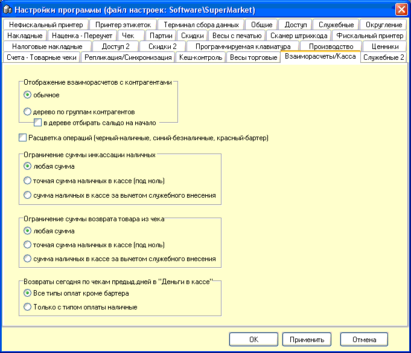

Отображение
взаиморасчетов с контрагентами - обычное и в виде дерева и в виде дерева с
сальдо на начало - второй способ более интересен графически, однако и более
требователен к ресурсам компьютера для отображения.
Расцветка операций - для более наглядной их
идентификации.
Ограничение суммы инкассации наличных - защита
(при необходимости) от изъятия из кассы несуществующей суммы денег.
Ограничение сумма возврата товара из чека -
аналогично предыдущей опции, но применительно к открытому чеку. Иногда
помогает при попытке возврата в начале рабочего дня, когда наторгованная
выручка еще недостаточна для крупного возврата, предотвратить ошибку
кассира.
Возвраты сегодня по чекам предыдущих дней в
"Деньги в кассе" - настройка указанного очета, более подробно смотрите раздел
справки "Деньги в кассе".